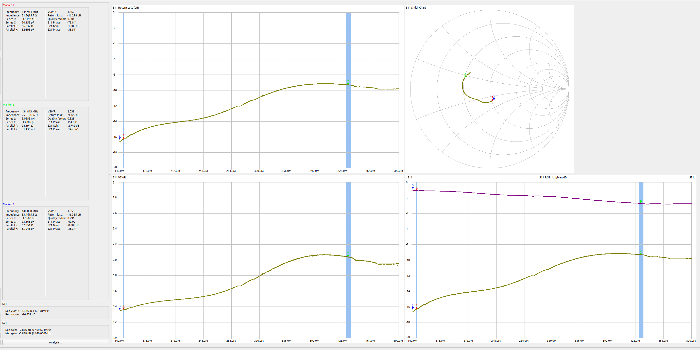
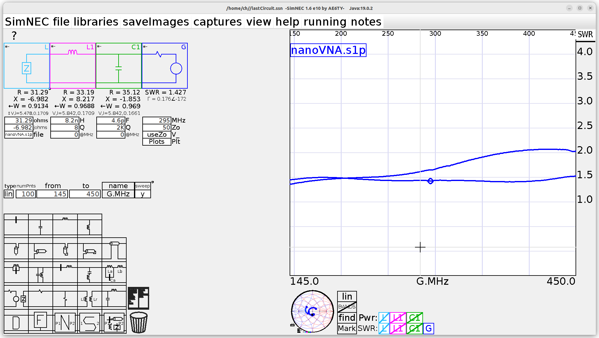

NanoVNA V2 Plus4 Pro with port 0 w/dc block connected to port and port 1 connected to RX port.

2m looks pretty good. Z0 = 51.5 - j15.7 Ω
70cm needs matching. Z0 = 25.5 + j8.36 Ω
8 nH series and 5 pF shunt improves 70cm without hurting 2m.

The 5-port 50Z junction geometry needs additional tuning.